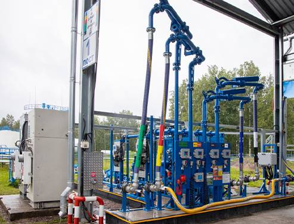

О компании
Компания “НЕФТЕПРОМСИСТЕМА” специализируется на разработке и внедрении химических продуктов и технологий для процессов нефтедобычи. Основанная в 1978 году, компания имеет более 40 лет опыта в нефтепромысловой химии и предлагает широкий спектр решений для повышения нефтеотдачи пластов и интенсификации добычи нефти
С момента своего основания, “НЕФТЕПРОМСИСТЕМА” активно занимается созданием и применением различных химических реагентов, таких как деэмульгаторы, ингибиторы коррозии, ингибиторы и удалители парафино и солеотложений, а также бактерициды и нейтрализаторы сероводорода1. Эти продукты помогают улучшить эффективность и рентабельность процессов добычи, подготовки и транспортировки нефти.
Компания также предоставляет полный спектр консультационных и технологических услуг, включая инженерное сопровождение и лабораторные испытания, что позволяет обеспечить успешное проведение работ на всех этапах нефтедобычи
Компания “НЕФТЕПРОМСИСТЕМА” была основана с целью разработки и внедрения передовых химических продуктов и технологий для нефтедобычи. Основное направление деятельности компании включает в себя повышение нефтеотдачи пластов и интенсификацию добычи нефти.
Основные направления деятельности компании включают:
- Деэмульгаторы: Используются для обезвоживания и обессоливания нефти в системах сбора и на установках подготовки нефти.
- Ингибиторы коррозии: Замедляют коррозионные процессы в нефтепромысловом оборудовании и трубопроводах.
- Ингибиторы и удалители парафино-отложений: Предотвращают отложения парафинов в оборудовании и трубопроводах при добыче, хранении и транспорте нефти.
- Ингибиторы и растворители солеотложений: Защищают оборудование от отложений неорганических солей, таких как сульфаты и карбонаты кальция и магния.
- Бактерициды и нейтрализаторы сероводорода: Борются с сульфатвосстанавливающими бактериями и поглощают сероводород в товарных нефтях1.
Основные направления деятельности компании включают:
- Деэмульгаторы: Используются для обезвоживания и обессоливания нефти в системах сбора и на установках подготовки нефти.
- Ингибиторы коррозии: Замедляют коррозионные процессы в нефтепромысловом оборудовании и трубопроводах.
- Ингибиторы и удалители парафино-отложений: Предотвращают отложения парафинов в оборудовании и трубопроводах при добыче, хранении и транспорте нефти.
- Ингибиторы и растворители солеотложений: Защищают оборудование от отложений неорганических солей, таких как сульфаты и карбонаты кальция и магния.
- Бактерициды и нейтрализаторы сероводорода: Борются с сульфатвосстанавливающими бактериями и поглощают сероводород в товарных нефтях1.
Компания “НЕФТЕПРОМСИСТЕМА” была основана с целью разработки и внедрения передовых химических продуктов и технологий для нефтедобычи. Основное направление деятельности компании включает в себя повышение нефтеотдачи пластов и интенсификацию добычи нефти.